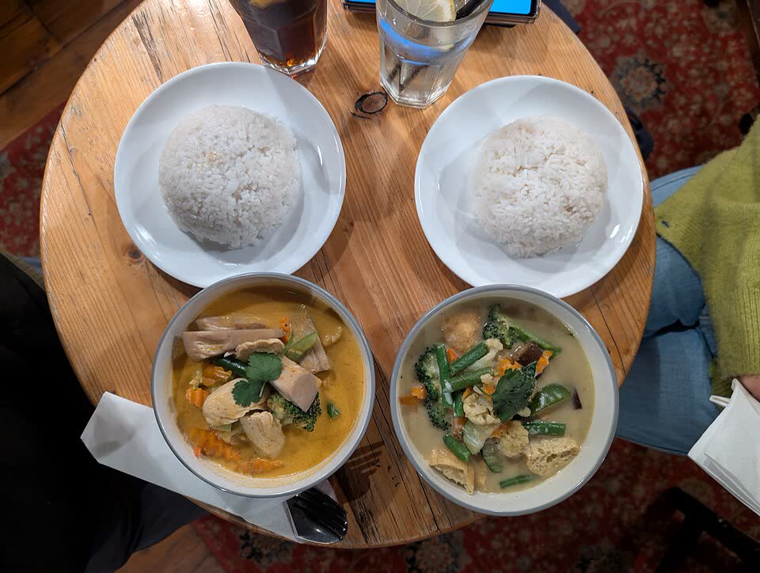
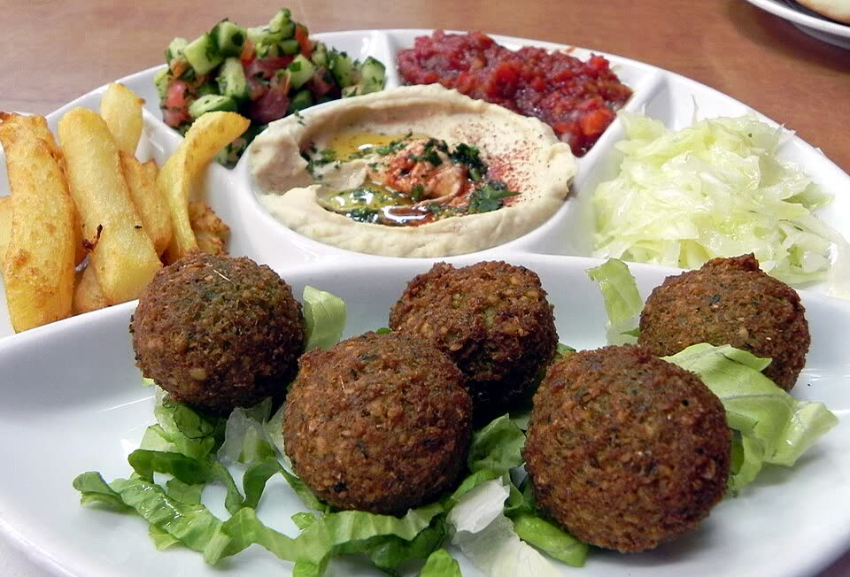
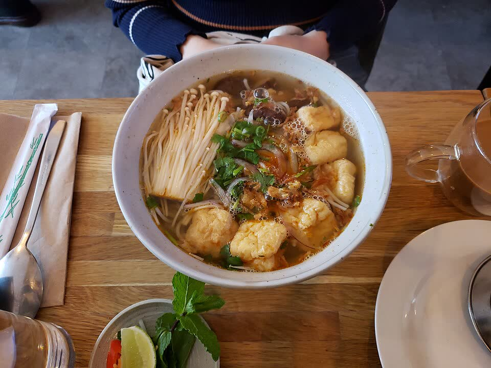
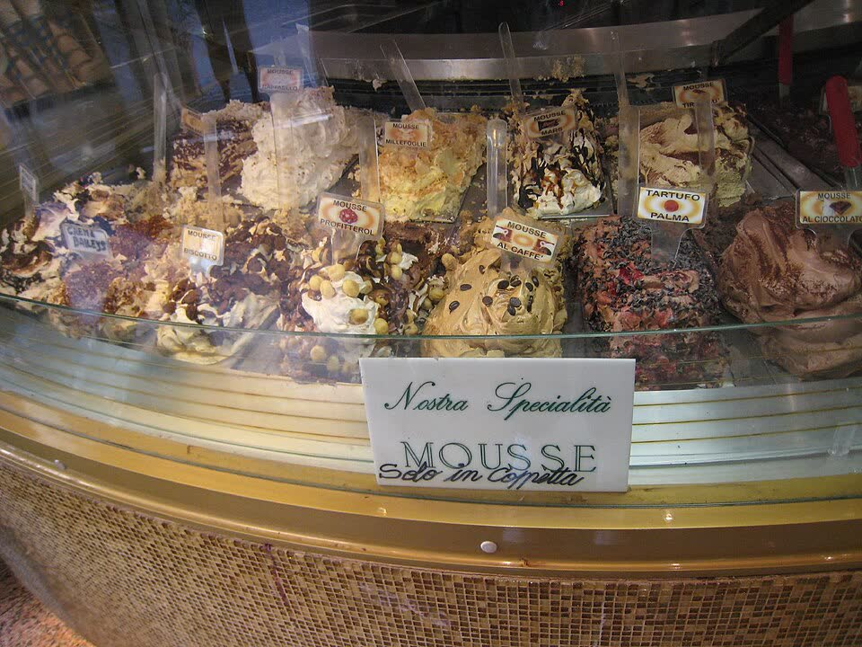
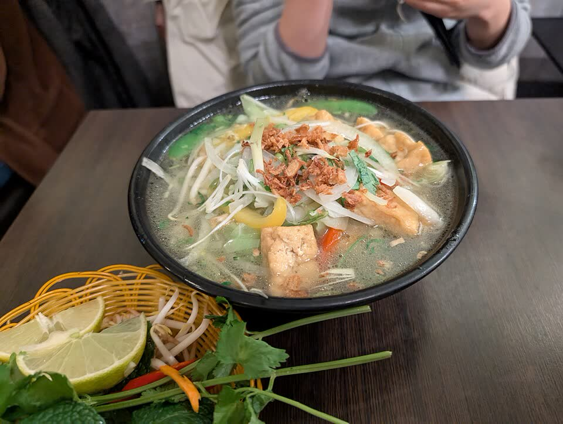
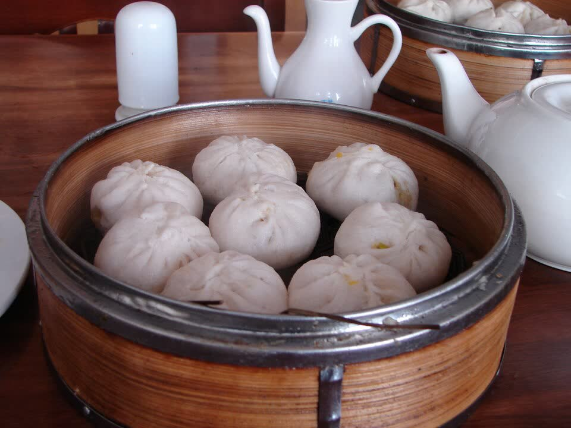
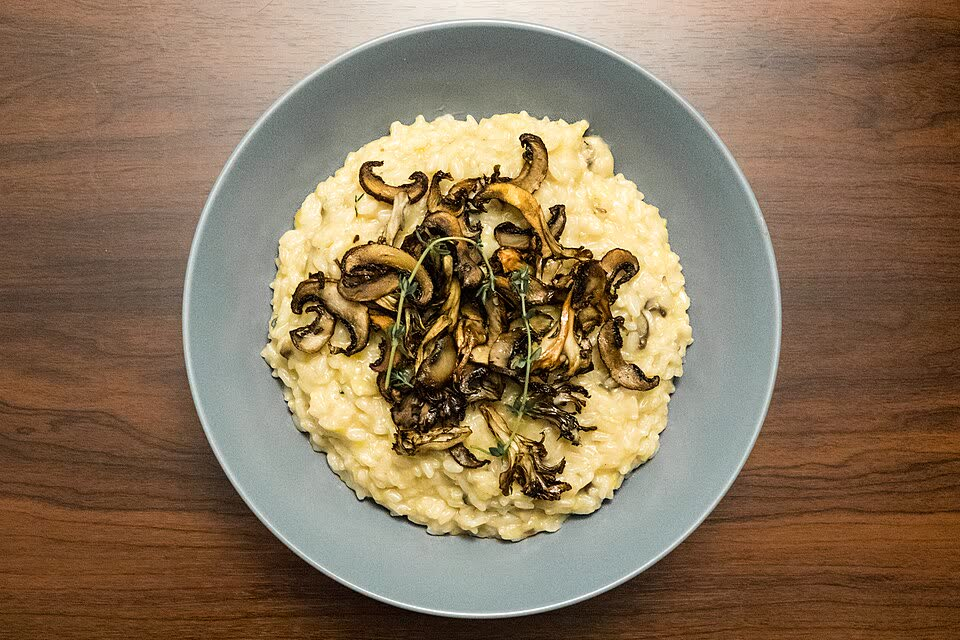
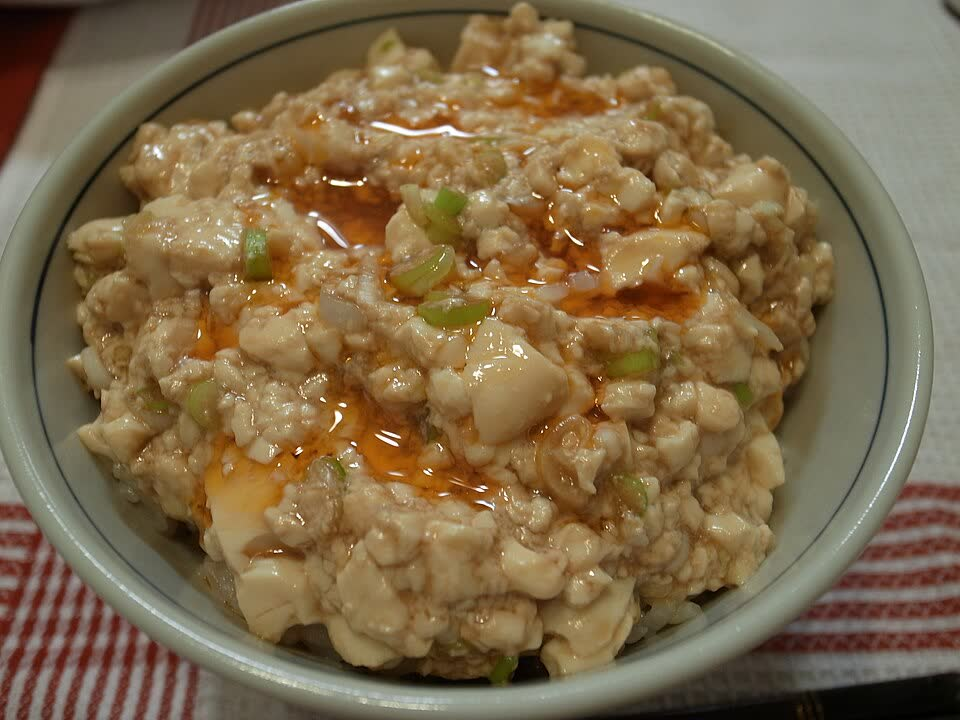
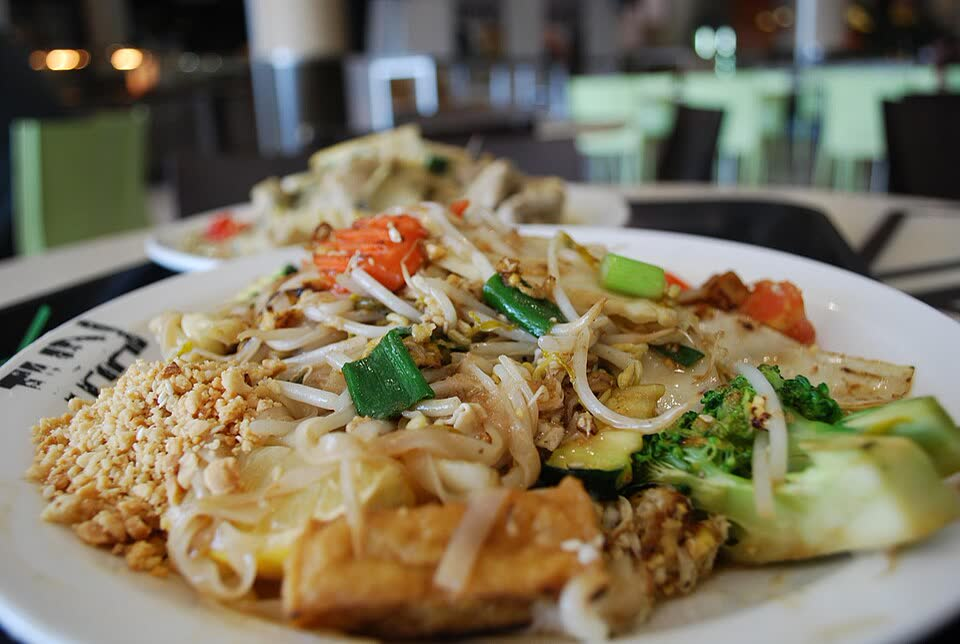

Opera House forecourt
Big white sails up close.


27 November – 1 December 2026
Five easy days for the whole family, from our home base in Linley Point.
14 Burton Street, Linley Point NSW 2066
Open in MapsAbout 20–25 min drive to the city. Drive times on this page are from here and are approximate.
Arrival day. Rest first, then free famous views at sunset (around 7:45pm).
EasyLand at Sydney Airport. Immigration, bags, pick up cars.
Drive home to Linley Point (about 35–45 min). Drop bags / check in if allowed.
Late lunch near home (see "Eating near home"), then rest.
Eating near homeDrive to the city (about 20–25 min) and park.
Circular Quay → Opera House → Harbour Bridge views → The Rocks.
Dinner near the harbour, then drive home.
About 300 m to Circular Quay. Closest to The Rocks dinner spots.
Night rate from ~A$24 per car
About 600 m to the Opera House.
A$25 per car, Friday evening rate from 6:30pm (pre-book in the Divvy app; arriving before 6:30pm may cost more)
Right at the Opera House. Easiest for elders. 2.2 m height limit.
From ~A$41 per car if you leave after 7pm (prepay online)
Sydney has no free tram or free city shuttle right now. Check the price for each car park on the day.

Family-friendly. Savoury vegetarian dishes and pancakes.

Thai stir-fries and tofu curries. Check every sauce has no seafood.

Falafel, hummus, halloumi and mezze.

Paneer, dal, naan. Over budget: set banquet for groups of 6+.
DFO shopping, an optional short sight nearby, then Sydney-famous desserts.
EasyDrive from home in both cars (about 20–25 min).
DFO Homebush outlet shopping. Pick a meeting point first!
Late lunch at DFO (the food court is easiest for mixed diets).
Optional: pick ONE sight below. Or go home and rest.
Dinner in Glebe/Newtown, or near home, then dessert if you like.
At the shops.
First 2 hours free. About 5 hours (shopping + lunch) ≈ A$26 per car
Park next to the sight you pick.
Register your plate for 2 hours free, then A$5/hour

Plant-based burgers.

Vietnamese vegan noodles and rice.

Plant-based wood-fired pizza.

Vegan Italian focaccia. Check 9pm closing.

Self-serve frozen yoghurt, pay by weight.

Famous strawberry-watermelon cake (~A$13). Contains almonds. Newtown, open till 10pm Sat.

Creative gelato. 258 King St, Newtown.

Turkish ice cream and baklava. Enmore Rd, Newtown.


The big day: cable cars, rainforest and the Three Sisters.
Full dayThe Scenic Railway is very steep. Skip it unless each person wants to go.
At the entrance. 2 m height limit.
Free
Next to the lookout. 5 accessible bays.
Paid (council pay-by-app). Check the sign, roughly A$4–6/hour
Book Scenic World ahead for a ~12:00pm session (from A$64 per adult; Sunday may cost more).

Best fit. Wood-fired veg pizzas. Open 7 days.

Asian fusion, vegan options. Sunday lunch until 3:30pm. Call ahead for 10+.

Vietnamese noodles. Check the broth is vegetarian and Sunday hours.

Global street food. Tight: closes about 3pm Sunday.

A slow beach day with ocean views and photos.
EasyLeave home (about 35–45 min). Drop elders at Bondi Pavilion, then park.
Bondi Beach walk, Pavilion and beach photos.
Bondi Icebergs viewpoint. Relax at a café. Fitter guests can walk part of the coast path.
Late lunch near the beach.
Relax, last photos, drive home.
Optional dinner near home.
Blair St, Hastings Pde, Wairoa Ave. About 5–10 min walk (500–800 m).
Free, but mostly 2–4 hour limits. Read every sign
About 200 m to the beach.
Capped ~A$60/day; pre-booking online is cheaper
Right behind the beach. Accessible bays near the Pavilion.
~A$12.40/hour per car (7am–7pm), pay by plate
Train + bus for 10+ people costs more than parking, so drive.

Top pick. Monday risotto special A$27, veg pasta and pizza. Book for the group.

Falafel pita, hummus, halloumi, salads.
Vegetarian pizzas. Check hours and seats for 10+.

Vegan pies. Takeaway backup, not for a sit-down group.
Check out. Family takes the train from Central. Sujay & Laura drive with the luggage. Meet in Newcastle.
Travel dayBreakfast, pack, check out.
Sujay & Laura drive the family to Sydney Central Station in a few trips (about 25 min each way). Or the family takes public transport (use the trip planner below).
Sujay & Laura drive to Newcastle with as much of the luggage as possible (about 2 hours).
Family catches a CCN train to Newcastle (check times on the day).
Family arrives at Newcastle Interchange. Sujay & Laura pick up.
Late lunch in Newcastle. Bring vegetarian snacks for the train.
Tuesday times are a rough guide. They depend on how many trips the car needs.
For easy lunches and dinners close to Linley Point. Call ahead to check hours and seats for 10+.

Asian dishes with vegetarian and vegan options. Books out: reserve early.

Curries, dal and momos. Good for groups.

Modern Indian with vegetarian choices.

Thai noodles and tofu curries. Check every sauce has no seafood.